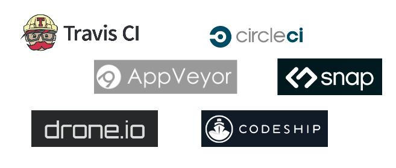
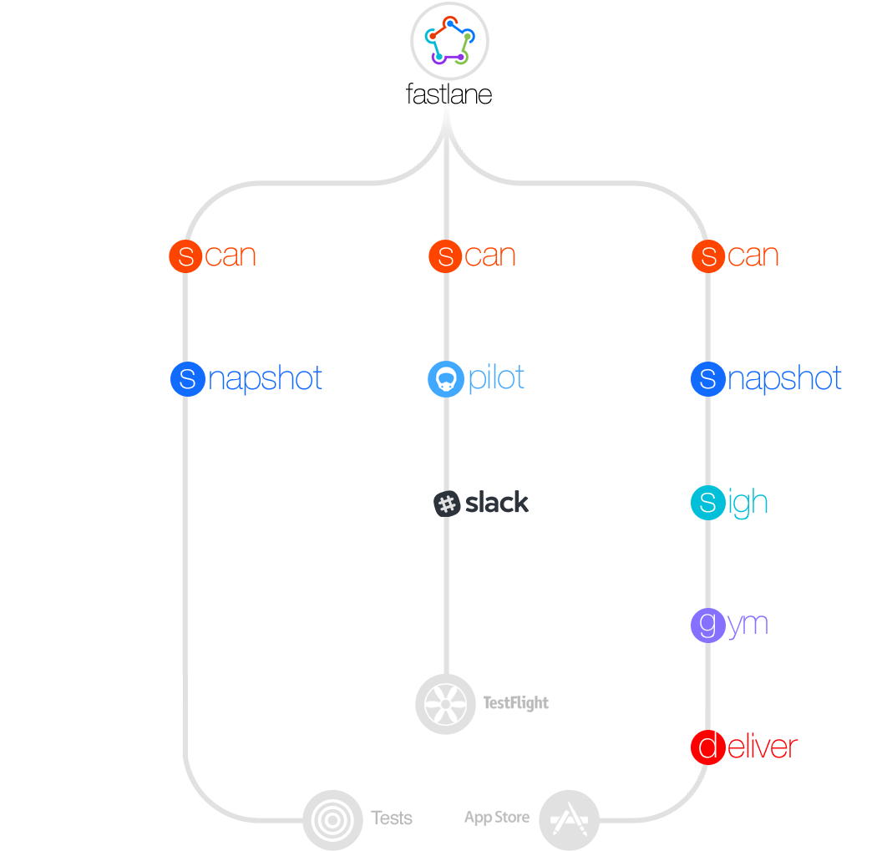

Continuous distribution for Qt applications on desktop and mobile
The Qt Vow
Qt: Code once deploy everywhere
Competitors: Fast distribution!
Qt: Tests and distribute everywhere?
MuseScore use case
MuseScore
Create sheet music on desktop
| Platform | Windows, MacOSX, Linux |
| Build system | Cmake |
| Code | Qt Widgets, GPL on github.com |
| Developers | 100, 5 regular |
| Testers | 1000s |
| Popularity | 150000 downloads per month |
| Home | https://musescore.org |
MuseScore Apps
Practice sheet music on mobile
| Platform | Android, iOS |
| Build system | Qmake |
| Code | Qt Quick, Closed source on github.com |
| Developers | 1 to 2 |
| Testers | 100s |
| Popularity | Top 5 in Music category in >80 countries |
| Home | https://musescore.com |
Challenges
- Run tests for every commit
- Automate distribution to testers
- 5 targets OSes
But...
- Not much human resources
- Sysadmin is no fun
Continuous integration software
- Hudson
- Jenkins
DIY, your own server, security, upgrades...
No thanks.
Continuous integration SaaS
For a git commit
- Launch servers
- Get the code
- Run scripts
- Store results
- Notify if failure


- Free fair use for open source project
- 129$/m for private github repo, 2 parallel builds
- Linux containers: Linux and Android builds
- MacOS virtual servers: MacOS and iOS builds
- No windows support :(
→ AppVeyor: Windows specialists
.travis.yml
language: cpp
before_install:
- "source build/travis/job1_Tests/environment.sh"
install:
- "./build/travis/job1_Tests/install.sh"
before_script:
- "./build/travis/job1_Tests/before_script.sh"
script:
- "./build/travis/job1_Tests/run_tests.sh"
after_script:
- "./build/travis/job1_Tests/upload.sh"
Keep it short and use scripts
Dependencies
- Use package manager (
apt-get,brew,cocoapods,qpm) - If not possible, download from official website and install
Install Qt without UI?
- It's more complicated than it should be...
- ... until you realize Qt installer is scriptable
- Amazing
extract-qt-installerby @benlau - (use a machine with a UI, install, zip, store and download)
Compilation
Limited time : 50 to 120 minutes
- Parallelize build and tests
- Precompiled header
ccache- Travis cache
A word about AppImage
“Linux apps that run anywhere”
- One file = one app, all depencies are bundled
chmod u+x MuseScore*.AppImage./MuseScore.AppImage
If Linux distribution packaging is a pain for your project, give it a try.
Distribution
artefacts-- upload to S3- FTP - SFTP
- BinTray
- Google Play Store alpha and beta channels
- App Store beta
Security
Obviously, don't put anything sensible in your build scripts...
- Qt license
- Code signing, certificate,...
- AWS S3, bintray, SFTP credentials, Google Play...
Use Travis encrypted variables, Travis encrypted files or eventually project settings
Encrypted variables
$ travis encrypt SOMEVAR=secretvalue
in .travis.yml
secure: ".... encrypted data ...."
echo $SOMEVAR
Encrypted files
$ travis encrypt-file super_secret.txt
in .travis.yml
openssl aes-256-cbc -K $encrypted_0a6446eb3ae3_key -iv $encrypted_0a6446eb3ae3_key -in super_secret.txt.enc -out super_secret.txt -d
Multiple files? zip or tar
iOS
git:
depth: 50000
matrix:
fast_finish: true
include:
- os: linux
- os: osx
env:
- "JOB=iOS"
before_install:
- gem install fastlane --no-ri --no-rdoc
- openssl aes-256-cbc -K $encrypted_f137f5f_key -iv $encrypted_f137f5f_iv -in build/travis/ios/certs/dist.zip.enc -out build/travis/ios/certs/dist.zip -d
- unzip build/travis/ios/certs/dist.zip -d build/travis/ios/certs
- openssl aes-256-cbc -K $encrypted_ab375fd_key -iv $encrypted_ab375fd_iv -in build/travis/ios/profile/dist_player_appstore.mobileprovision.enc -out build/travis/ios/profile/dist_player_appstore.mobileprovision -d
- ./build/travis/ios/add-key.sh
install:
- source ./build/travis/ios/travis_ios_dependencies.sh
before_script:
- python build/updateBuildNumber.py -f version.txt
- cat version.txt
script:
- ./build/travis/ios/travis_ios_build.sh
Certificates, provisioning profiles
- Create a custom keychain
- Make it default and unlock it
security create-keychain -p travis ios-build.keychain
security default-keychain -s ios-build.keychain
security unlock-keychain -p travis ios-build.keychain
-
Add certificates to keychain and allow codesign to access them
KEYCHAIN=~/Library/Keychains/ios-build.keychain CODESIGN=/usr/bin/codesign security import apple.cer -k $KEYCHAIN -T $CODESIGN security import dist.cer -k $KEYCHAIN -T $CODESIGN security import dist.p12 -k $KEYCHAIN -P $IOS_KEY_PASSWORD -T $CODESIGN -
Put the provisioning profile in place
PPROFILE=~/Library/MobileDevice/Provisioning\ Profiles mkdir -p $PPROFILE cp $PROFILE_NAME_PLAYER.mobileprovision $PPROFILE
iOS: build
-
Run qmake to generate XCode project
mkdir $PLAYER_BUILD_ROOT cd $PLAYER_BUILD_ROOT qmake -r $PLAYER_PRO_FILE -spec macx-ios-clang CONFIG+=release CONFIG+=iphoneos
Fastlane: Automate app release process on iOS and Android
iOS: build
Run fastlane to build and deploy to app store
lane :beta do
gym(xcargs: "PROVISIONING_PROFILE=<profile-uuid>")
pilot(distribute_external: false)
end
mkdir fastlane
cp ../player-qt/build/travis/ios/Fastfile fastlane/
FASTLANE_ITUNES_TRANSPORTER_USE_SHELL_SCRIPT=1 fastlane beta